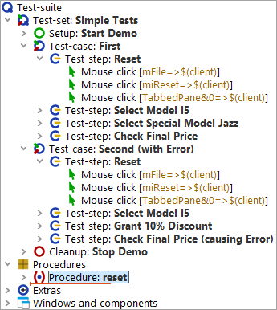
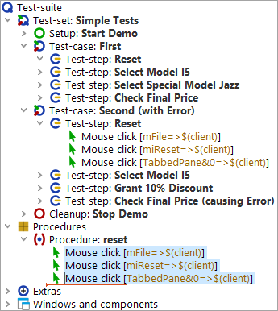
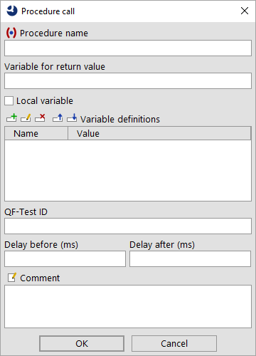
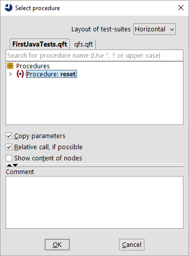
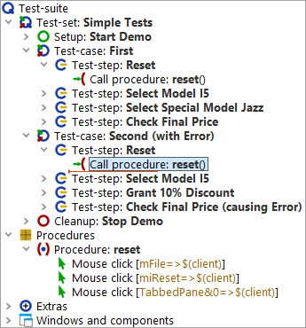

| Version 6.0.3 |
There is more than one way to create procedures and insert procedure calls. We will start with the manual one by inserting an (empty) procedure node and moving the respective actions into it. Then we will create the respective procedure call.
It is good to know those basic steps but there is a second more elegant way of creating procedures, which we will explain afterwards.
Okay, let's do it by hand. We will start with creating a procedure node and naming it appropriately.
|
|  | ||
|
| Figure 3.2: Create a procedure node | ||
The second step is to fill the procedure with the respective reusable actions.
|
|  | ||
|
| Figure 3.3: Fill in the procedure content | ||
The third step is to add a procedure call to the place of the three 'Mouse clicks' you moved.
|
|  | ||
|
| Figure 3.4: Insert a procedure call | ||
|
|  | ||
|
| Figure 3.5: Select a procedure | ||
In order get a real benefit from the procedure, of course, we also need to replace the content of reset test-step in the second test-case by the 'reset' procedure call, too.
You can do it the same way as before or use the following alternative steps to create a procedure call:
The test-suite should look like this:
|
|  | ||
|
| Figure 3.6: Test-suite with procedure | ||
When now executing the test-cases the reset will work exactly like it did before. Hence, in the run-log you will see the same executed node as before, only preceded by the procedure call.
| Last update: 9/6/2022 Copyright © 2002-2022 Quality First Software GmbH |